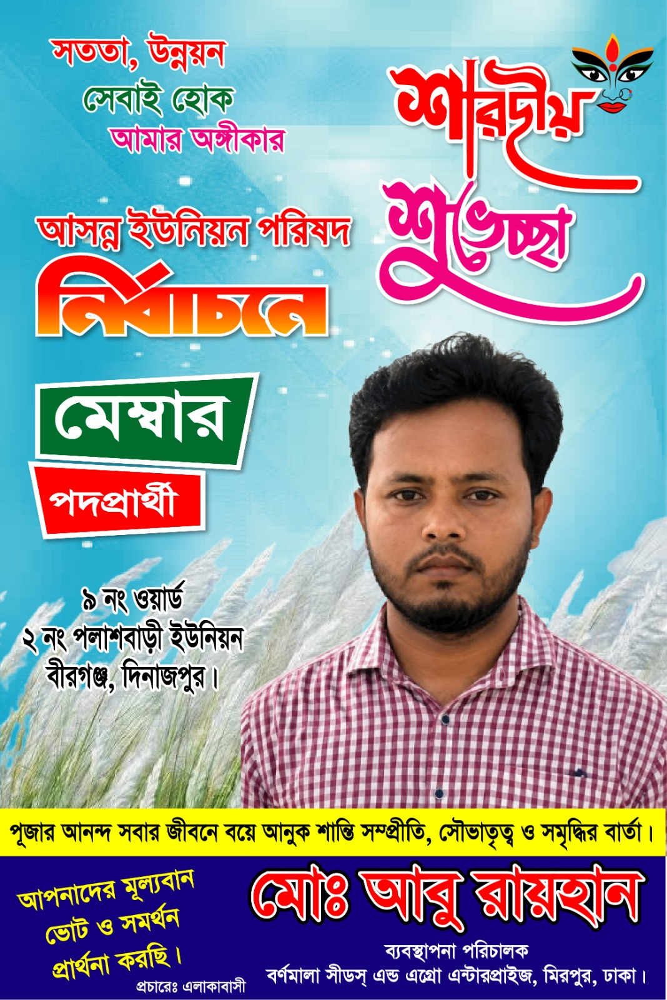

০৯ নং ওয়ার্ড, ২ নং পলাশবাড়ী ইউনিয়ন পরিষদ — ওয়ার্ডের উন্নয়ন ও মানুষের সেবায় সবসময় পাশে

আমি মোঃ আবু রায়হান, ০৯ নং ওয়ার্ড, ২ নং পলাশবাড়ী ইউনিয়ন পরিষদ-এর একজন নিবেদিতপ্রাণ বাসিন্দা ও সমাজকর্মী। নির্বাচনের সময় হোক বা পরবর্তী যেকোনো সময়—ওয়ার্ডের মানুষের সুখ-দুঃখ, নাগরিক সমস্যা ও সামাজিক উন্নয়নে আমি পাশে থাকতে প্রতিশ্রুতিবদ্ধ।
০৯ নং ওয়ার্ডের পাড়া ও মহল্লার ভাঙা রাস্তা, কালভার্ট ও চলাচলের পথ সংস্কারে উদ্যোগ এবং নিয়মিত তদারকি।
জলাবদ্ধতা নিরসনে ড্রেন পরিষ্কার রাখা, গুরুত্বপূর্ণ সড়ক ও গলিতে আলো এবং বিশুদ্ধ পানির সহজলভ্যতা নিশ্চিত করা।
বয়স্ক, বিধবা, প্রতিবন্ধী ভাতা ও জন্মনিবন্ধনসহ ইউনিয়ন পরিষদের সেবায় সাধারণ মানুষের হয়রানি কমাতে সহযোগিতা।
রক্তদান, দুর্যোগে সহায়তা, তরুণদের নিয়ে ইতিবাচক কাজ এবং ওয়ার্ডের যেকোনো বিপদে সাড়া দেওয়া।
নাম: মোঃ আবু রায়হান
ওয়ার্ড ও ইউনিয়ন: ০৯ নং ওয়ার্ড, ২ নং পলাশবাড়ী ইউনিয়ন পরিষদ
যোগাযোগ নম্বর: 01740238169
মতামত বা সমস্যা জানান আবেদন: ফর্ম পূরণ করুন →